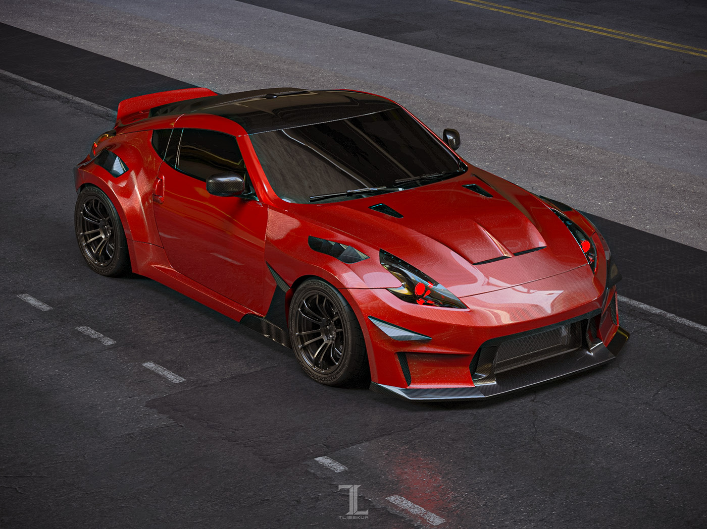
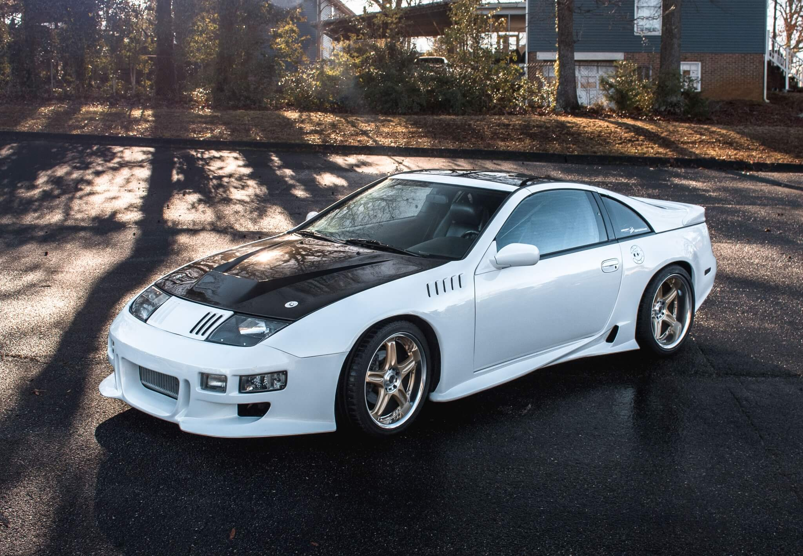

NISSAN
SKYLINE
GT-R34

Az első Skyline, ami történelmi ikonná vált, az 1970-ben megjelent PGC-10, vagyis ahogy többen ismerik, a Hakosuka lett. A harmadik generációs Skyline csúcsváltozatát már akkor GT-R-nek hívták és létezett belőle kupé és szedán is. Ebbe egy 2 literes, dupla vezérműtengelyes sorhatost szereltek, ami már akkor 160 lóerőt és 180 Nm-t tudott.Az R jelölés az 1981-ben megjelent hatodik generációnál érkezett: az volt az R30. Ebből nem készült GT-R, viszont épült belőle például egy brutálisan kinéző versenyautó, a Super Silhouette, amivel az All Japan Sports Prototype Championship keretein belül indultak, és az alapját a 205 lóerős Skyline Turbo C adta.A kupé R32-be kezdésképp belógatták a RB26DETT kódú, kétturbós sorhatost. Ez a motorkód biztosan sokaknak cseng ismerősen, ami nem véletlen, hiszen annyira jól sikerült, hogy még ma is sokan tuningolják. A 2,6 literes, ikerturbós sorhatos az akkori megegyezés szerint 276 lóerőt tudott, de a valóságban ennél jóval erősebb volt mindegyik.Az R33-ból is készültek elképesztően király különkiadások, amiket nagyon nehéz lenne egyesével felsorolni, ezért maradjunk a legérdekesebbeknél. Az egyik ilyen a Nismo 400R volt, amiben az RB26 már könyörtelen 400 lóerőt tudott és ma már annyira ritka és értékes, hogy Bugatti-áron sem elképzelhetetlen eladni.Az R33 után aztán megérkezett az a Skyline, amit a legtöbben ismernek, és aminél talán a legtöbb ember zúgott bele menthetetlenül a típusba. Igen, ez volt az 1999-es Skyline R34 GT-R, minden idők egyik legnépszerűbb és kétségkívül az egyik legmenőbb japán autója.Az R34 lett A Skyline: szinte mindenkinek ez a változat az első, ami beugrik a típusról, amiben Paul Walker és a Halálos Iramban filmek, az EA Games és a két Need for Speed Underground, illetve a Polyphony Digital és a Gran Turismo széria mind óriási szerepet játszottak.Az R34 lett A Skyline: szinte mindenkinek ez a változat az első, ami beugrik a típusról, amiben Paul Walker és a Halálos Iramban filmek, az EA Games és a két Need for Speed Underground, illetve a Polyphony Digital és a Gran Turismo széria mind óriási szerepet játszottak.Persze az igazi nagyágyúknak a Nismo, vagyis a Nissan Motorsport International által összerakott, pengeéles GT-R-ek számítottak. Volt S-Tune, R-Tune és az utcai R34 Skyline-ok királya, a Nismo Z-Tune. Utóbbiban durván meghúzták a motort is: az RB28DETT – mert ez már 2,8 literes – 500 lóerőt és 540 Nm-es nyomtékot tudott. Érdekesség, hogy a Nismo használt R34 GT-R-ekből készítette el a Z-Tune-okat és eredetileg 20 darab gyártását tervezték, de végül csak 19 készült el.
350Z

A rendkívül jó menetteljesítménnyel rendelkező Nissan 5.9 másodperc alatt van százon, és bizony rendesen meg lehet hajtani a 280 lóerős V6-os motort (vannak persze bikább erőforrással rendelkező típusok is), mely egészen 250 km/óráig képes röpíteni a másfél tonnás szörnyeteget, bár kétszáz fölötti tempónál már igencsak rá kell feszülni a gázpedálra. Természetesen a teljesítménynek ára van, a fogyasztása ugyan függ a tulaj lábától is, mégis alapból (papíron) 10-13 liter üzemanyagot csipeget százon, ami kevésbé ideális körülmények között bőven lehet több is.A minden szempontból sportos Nissan belül is igazán mutatós, a rendkívül elegáns bőr sportülések és a kerek formákkal megáldott műszerfal szintén sokat dob az összképen. Valószínűleg túl nagy újdonságot nem árulunk el azzal, ha kimondjuk: a 350Z-t imádják a tuningosok, rengeteg féle-fajta speckó kivitel készült már, leginkább az Egyesült Államokban és Japánban lehet gyakrabban belefutni a nem mindennapi példányokba.
300ZX
(Z32)
Mikor megjelent, senki nem gondolta, hogy 11 évig marad gyártásban és még 2000-ben is kapható lesz. Hiszen akkoriban a legtöbb japán modellt négy év után lecserélték. De a Z32-es Fairlady sorozat műszakilag nagyon rendben van: igényes felfüggesztés mind a négy keréknél, DOHC hengerenként négyszelepes motor változó vezérléssel, számítógép segítségével tervezett karosszéria, állítható lengéscsillapítók, összkerék-kormányzás, na és persze a vezető különleges környezete! A japán gazdasági buborék egyik csúcs terméke ez, nem vitás.Nem készült a Z32-es sorozatból túl sok, csak talán 160 ezer példány nagyjából. Ennek ellenére az imázsa erős, sok filmben feltűnik és a motorsport szereplést sem hagyta ki. Nagyon jellemző, hogy 1994-ben, vagyis amikor már kb. 5 éves volt a típus, akkor nevezték a Le Mans-i 24-órás versenyre a gyáriak. Az egyik sajnos kieset, de a másik a Porsche és Toyota prototípusok mögött, a szenzációs abszolút 5. helyen futott be, a széria-közeli GTS kategóriát fölényesen megnyerve. Mögötte végzett az összes 911-es, Ferrarik, Dodge Viper, Honda NSX, Mazda RX-7 és még sorolhatnánk. A hírek szerint a döntő tényező a teljesítmény volt, nagyjából 650 lóerővel gazdálkodhattak a 300ZX versenyváltozat pilótái.